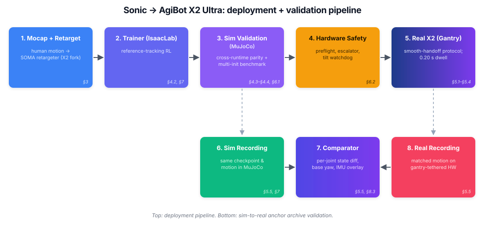

Mocap → MuJoCo → real robot (natural walk)
One canonical natural-walk motion shown end-to-end: the retargeted reference motion on the left, the same checkpoint replayed in MuJoCo in the middle, and the checkpoint deployed on the AgiBot X2 Ultra hardware on the right. Same motion, three runtimes — what "sim-to-sim-to-real" looks like in one frame.
1Abstract
We deploy a learned whole-body controller on the AgiBot X2 Ultra (31 DoF, 14-DoF dexterous hands) — to our knowledge the first publicly documented Sonic-family policy on a non-G1 humanoid. Reaching the real robot from upstream Sonic required closing two sequential transfers: a sim-to-sim transfer from the training simulator (IsaacLab) to the deployment evaluation simulator (MuJoCo), and a sim-to-real transfer from MuJoCo to hardware through a closed-API vendor motion controller.
Adapting upstream Sonic surfaced gaps at every layer. Motion retargeting introduced arm-flip and wrist-clamp failures rooted in inverse-kinematics assumptions specific to the original platform. The sim-to-sim transfer was blocked by three independent observation- and encoding-layer bugs that masqueraded as physics-tuning problems: a foot-collision URDF mismatch in the training distribution; a 6D-rotation channel-order error that survived months of tolerance-based parity checking because permutations preserve aggregate norms; and a tokenizer-layout error at the runtime-to-export adapter boundary.
The sim-to-real handoff produced roughly 1.6 s of dual-publisher whir because the vendor controller exposed only coarse start/stop primitives and no graceful-overlap command; a persistent-client mode escalator with controller-reported mode as ground truth reduced measured dwell in the intermediate joint-default state to 0.20 s, and we compose a finite-state protocol around the same primitives so the operator hears a single continuous handoff. We close with a four-class failure-mode taxonomy — bug, physics-divergence, handoff, and tuning — intended as an organising principle for subsequent humanoid deployments.
2Pipeline

3Key Takeaways
-
Two sequential transfers, not one
We treat IsaacLab → MuJoCo as a first-class sim-to-sim bridge, then MuJoCo → hardware as sim-to-real. Each layer gets its own validation substrate; this separation is what made debugging tractable.
-
Three observation/encoding bugs masqueraded as physics
A foot-collision URDF mismatch, a 6D-rotation channel-order error (norms hide permutations), and a tokenizer-layout error at the export-adapter boundary. Each was confirmed by a controlled fine-tune validation rather than tolerance-based parity alone.
-
Dual-publisher whir: 1.6 s → 0.20 s
A persistent-client mode escalator using controller-reported mode as ground truth, wrapped in a finite-state protocol around the vendor's coarse start/stop primitives, collapses the audible handoff into a single continuous transition.
Ablation: foot-collision URDF fix (run 1 vs run 2)
One ablation, six rollouts, same natural-walk motion. The top row shows the 2k, 6k, and 16k checkpoints from run 1 (original foot-collision URDF) — all three collapse in under 6 s. The bottom row shows the same checkpoints from run 2 with the foot-collision URDF fix — all three run the full length without failing. A single observation-layer fix swings the success rate from 0/3 to 3/3 across checkpoints, which is exactly why we treat this class of bug as "masquerading as physics" rather than a tuning problem.
4Sim-to-Real Anchor Archive
What three matched recordings can — and cannot — prove
A committed archive of three matched simulator–hardware recordings from a single canonical checkpoint validates the URDF/MJCF kinematic chain and torso inertial model to within roughly 5° per-DoF RMS and base IMU angular velocity to within roughly 5%. We explicitly scope the archive's non-coverage: foot contact, friction, free-base dynamics, actuator saturation, and sensor noise are not, and cannot be, addressed by these recordings — and we close with a set of policy-free bench tests that would convert this indirect closed-loop evidence into direct, component-level validation.
Real vs sim: side-by-side replay + lower-body joint plots
Left half: two robots walking side-by-side in MuJoCo — the solid robot replays the real-hardware recording, the shaded robot replays the sim rollout from the same canonical checkpoint. Right half: per-joint trajectories for the lower body, real overlaid on sim. This is the direct visual evidence behind the anchor-archive numbers above — kinematic chain and torso-inertial parity to within a few degrees and a few percent on base IMU angular velocity, while contact / friction / actuator-saturation divergences (out of scope for the archive) remain visible.
5Failure-Mode Taxonomy
Four classes for organising the next deployment
We close with a four-class failure-mode taxonomy — bug, physics-divergence, handoff, and tuning — intended as an organising principle for subsequent humanoid deployments. Each class implies a different debugging substrate and a different evidence bar before a fix can be considered complete.
6Citation
If you find this work useful, please cite:
@misc{sonic2026agibotx2,
title = {Porting {NVIDIA} Sonic to the {AgiBot} {X2} Ultra:
A Sim-to-Sim-to-Real Bridge for a Non-{G1} Humanoid},
author = {Claude Opus and Sitarama Raju Chekuri and
Zeeshaan Mohammed and Dhruv Diddi and Samarth Shukla},
year = {2026},
note = {Project page and PDF},
howpublished = {\url{https://sonic-agibot-x2.github.io/}},
}